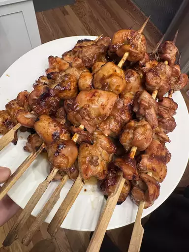

Grilled Chicken Phillipino-style

This recipe will help you make the best Grilled chicken of your life!
Ingredients
- Banana ketchup
- 1 medium very ripe banana, mashed
- ¼ cup tomato paste
- ¼ cup apple cider vinegar
- 2 tablespoons brown sugar
- 2 teaspoons vegetable oil
- 2 teaspoons freshly grated ginger
- ½ teaspoon onion powder
- ¼ teaspoon garlic powder
- ¼ teaspoon cayenne pepper
- ¼ teaspoon kosher salt, or to taste
- ⅛ teaspoon ground allspice
- ⅛ teaspoon ground turmeric
- ¼ cup water
- Chicken and marinde
- ½ cup prepared banana ketchup
- ¾ cup lemon-lime soda (such as 7-Up®)
- ½ cup soy sauce
- 4 cloves crushed garlic
- 2 tablespoons brown sugar
- 1 teaspoon freshly ground black pepper
- 1 medium lemon, juiced
- 2 ½ pounds skinless, boneless chicken thighs, cut in half
- Basting sauce
- 3 tablespoons reserved banana ketchup
- 3 tablespoons soy sauce
- 1 tablespoon brown sugar
- 1 tablespoon vegetable oil
- 1 teaspoon fish sauce
How to cook
-
Mash ripe banana, tomato paste, vinegar, brown sugar, oil, ginger, onion powder,
garlic powder, cayenne, salt, allspice, and turmeric together in a saucepan.
Add water and stir to combine.
-
Place over medium-high heat and bring to a simmer. Stir to combine. Reduce heat
to medium and simmer until reduced and thickened, 7 to 10 minutes. Remove from heat;
reserve 3 tablespoons for the basting sauce, leaving about 1/2 cup for the marinade.
-
Transfer ½ cup banana ketchup to a bowl and add lemon-lime soda, soy sauce, garlic,
brown sugar, black pepper, and lemon juice for the marinade. Whisk until combined.
-
Add halved chicken thighs to marinade and toss to coat. Cover with plastic wrap and marinate
in the refrigerator for 4 to 18 hours.
-
When you are ready to cook the chicken, combine reserved 3 tablespoons banana ketchup,
soy sauce, brown sugar, oil, and fish sauce in a small bowl for basting sauce. Preheat a charcoal
grill until coals are very hot.
-
Remove chicken from the refrigerator and place on metal skewers, folding in half with the
smooth side on the outside, the rougher side folded in.
-
Grill chicken over hot coals until no longer pink in the centers, 15 to 20 minutes, turning
and basting every 2 to 3 minutes.
- Serve with accumulated juices or extra basting sauce.